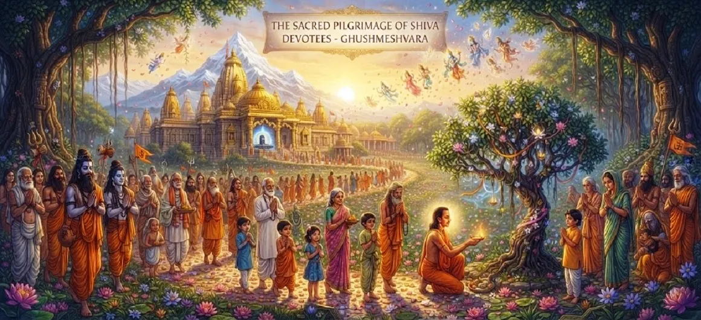

The Sacred Pilgrimage of Shiva Devotees
The twenty-fifth chapter of the Kotirudra Samhita explores the profound spiritual rewards, inner purification, and sacred traditions of undertaking pilgrimages to Lord Shiva's holy abodes.
Moving beyond the specific legends of the Jyotirlingas, this chapter highlights how the physical and inner journey of a pilgrim transforms the soul and draws the devotee closer to the Divine.
It serves as an essential guide for anyone seeking higher spiritual realization through sacred travel.
Chapter 25 Highlights
Inner Transformation
How outer travel mirrors the inner journey of consciousness.
Attitude of a Pilgrim
The virtues of humility, faith, and patience on the road.
Purification of Karma
The washing away of past sins through sacred steps.
Divine Protection
Shiva's watchful grace guarding sincere travelers.
Spiritual Elevation
Ascending from worldly attachments to divine realization.
Merit of Pilgrimage
The boundless spiritual fruit earned by visiting holy sites.
Core Topics in This Chapter
- 01The True Nature of Sacred Pilgrimage→
- 02Preparation of Mind and Heart→
- 03Essential Virtues of a Shiva Pilgrim→
- 04Cleansing of Accumulated Karma→
- 05Experiencing Divine Sanctity→
- 06Overcoming Travel Obstacles→
- 07The Supreme Fruit of Devotion→
- 08Communion with Lord Shiva→
- 09Returning Home Transformed→
- 10Transition to Chapter 26→
The True Nature of Sacred Pilgrimage
The text explains that a pilgrimage (Yatra) is not merely physical travel from one location to another, but a sacred movement of the soul toward the Divine.
Every step taken toward a holy shrine brings the seeker closer to higher awareness.
Preparation of Mind and Heart
Before embarking on a journey to Shiva’s abodes, a devotee must purify their intentions, letting go of ego, anger, and material attachments.
The inner state of the pilgrim determines the depth of the spiritual experience.
Essential Virtues of a Shiva Pilgrim
A true devotee travels with complete humility, strict self-control, and continuous chanting of the holy names and mantras of Lord Shiva.
These virtues act as a spiritual armor during the pilgrimage.
Cleansing of Accumulated Karma
The hardships faced along the journey, combined with sincere faith, act as a powerful purifier, burning away the residues of past negative karma.
The pilgrim returns lighter, freed from heavy spiritual burdens.
Experiencing Divine Sanctity
Upon arriving at the sacred shrine, the pilgrim experiences a profound wave of peace and divine presence that revitalizes the spirit.
The atmosphere of the holy place aids deep meditation and prayer.
Overcoming Travel Obstacles
The chapter reassures devotees that any physical difficulties or obstacles encountered during the pilgrimage are easily surmounted through Shiva’s grace.
Faith provides the inner strength needed to complete the sacred trek.
The Supreme Fruit of Devotion
The ultimate reward of the pilgrimage is not material gain, but the blossoming of pure devotion (Bhakti) and experiential wisdom in the heart.
The seeker realizes their oneness with the universal consciousness.
Communion with Lord Shiva
Through worship, prayer, and contemplation at the holy site, the devotee achieves a state of intimate communion with Lord Shiva.
The duality between seeker and Lord dissolves in the light of grace.
Returning Home Transformed
A true pilgrim carries the sanctity of the holy shrine back into daily life, spreading peace, compassion, and righteousness wherever they go.
Every action becomes an extension of their devotion.
Transition to Chapter 26
Having explored the spiritual mechanics of sacred pilgrimage, the narrative prepares to detail the specific merits earned through such worship.
Readers are invited to continue to Chapter 26, The Merit of Worshipping Jyotirlingas.
Key Teachings of Chapter 25
Inner Yatra
Outer travel is a symbol of the soul's journey inward.
Power of Humility
Traveling without ego opens the heart to grace.
Karma Cleansing
Sacred hardships wash away spiritual impurities.
Divine Shield
Faith protects the pilgrim through every trial.
True Reward
The ultimate fruit of travel is awakened devotion.
Enduring Impact
The sanctity of the journey transforms daily life.
Spiritual Reflection
The sacred pilgrimage is a mirror of life itself. We set forth with a destination in mind, facing trials, weather, and fatigue, yet sustained by an inner longing for the Divine. When we reach the holy abode of Lord Shiva, we realize that the journey was never just about crossing miles of earth, but about shedding the layers of ego and illusion that cloak our true spiritual nature. By undertaking this pilgrimage with reverence, every devotee participates in an eternal ritual of awakening, returning to the world transformed and deeply anchored in peace.
Living the Message of Chapter 25
Treat every day of your life as a sacred journey toward divine consciousness, maintaining awareness and devotion.
Approach challenges with patience and faith, viewing them as opportunities for spiritual growth rather than mere obstacles.
Carry the peace found in moments of prayer into your interactions with everyone around you.
Key Spiritual Concepts
The sacred journey undertaken by a devotee to holy shrines.
The cleansing of mind, emotions, and karma through devotion.
Humility, self-control, and continuous remembrance of God.
The inner realization and devotion gained from holy travel.
The deep experiential union of the devotee's soul with Shiva.
Carrying the grace of sacred places into daily existence.
Chapter Summary
Kotirudra Samhita Chapter 25 examines the sacred pilgrimage undertaken by Shiva devotees. It reveals how outer travel to holy shrines serves as a profound catalyst for inner transformation, cleansing karma, fostering humility, and deepening devotion. By detailing the mindset and virtues required of a true pilgrim, this chapter connects the physical abodes of Lord Shiva with the spiritual awakening of the soul, seamlessly transitioning the narrative toward Chapter 26, which explores the specific merits of worshipping Jyotirlingas.
Frequently Asked Questions
1. What is the core focus of Kotirudra Samhita Chapter 25?
Chapter 25 focuses on the spiritual significance, inner transformation, and immense merits earned by devotees who undertake sacred pilgrimages to the holy shrines of Lord Shiva.
2. Why is undertaking a pilgrimage to Shiva's abodes considered vital?
It cleanses past karma, detaches the mind from superficial illusions, and aligns the seeker's consciousness with divine truth.
3. What benefits do pilgrims receive according to this chapter?
Pilgrims receive mental peace, spiritual elevation, purification of mind and body, and steady progress toward liberation (moksha).
4. How does this chapter connect to the previous narrative?
After exploring the twelve Jyotirlingas concluding with Ghushmeshvara in Chapter 24, this chapter honors the actual journeys devotees take to visit these holy sites.
5. What narrative follows this chapter?
The narrative transitions to Chapter 26, 'The Merit of Worshipping Jyotirlingas'.
6. What attitude should a true pilgrim maintain?
A pilgrim should travel with humility, faith, controlled senses, and a heart completely dedicated to the remembrance of Lord Shiva.
“The sacred pilgrimage is the soul’s journey back to its divine origin, where every step taken in faith dissolves karma and awakens eternal peace.”
Continue Through Kotirudra Samhita
Chapter 25 explores the sacred pilgrimage of Shiva devotees. Continue to Chapter 26, The Merit of Worshipping Jyotirlingas.